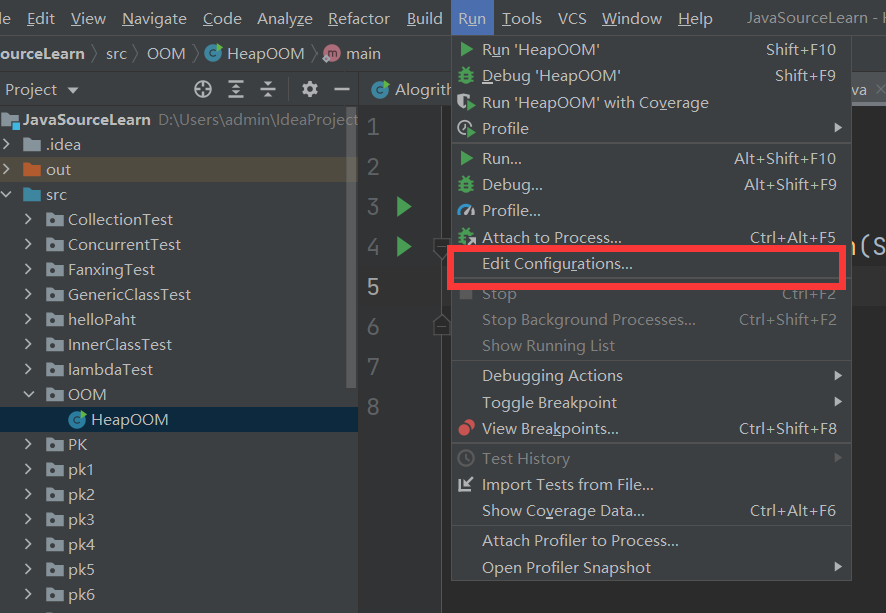
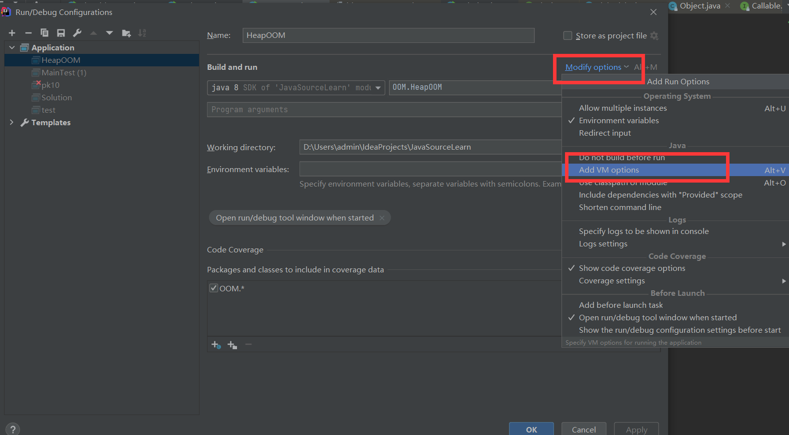
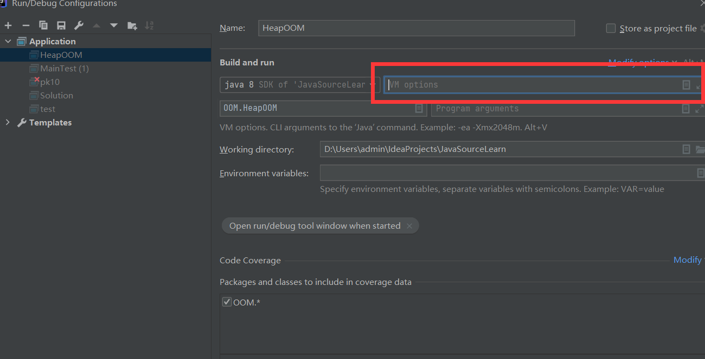
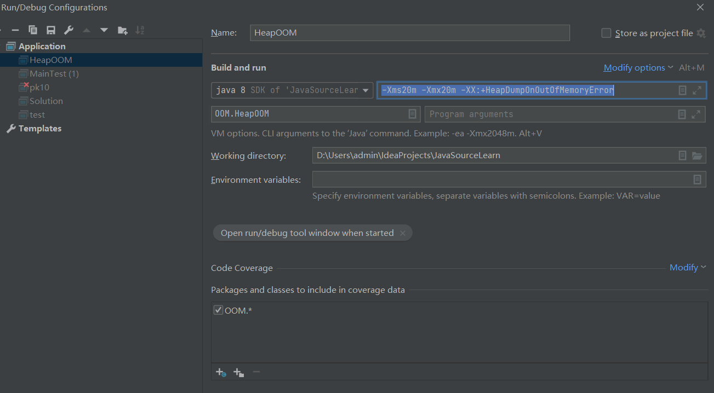
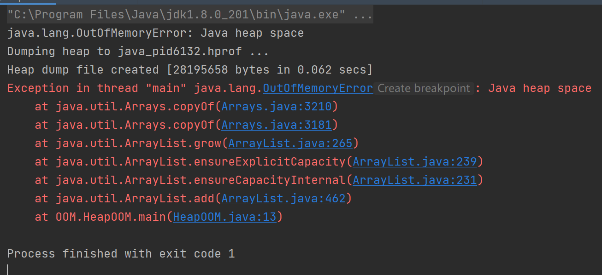
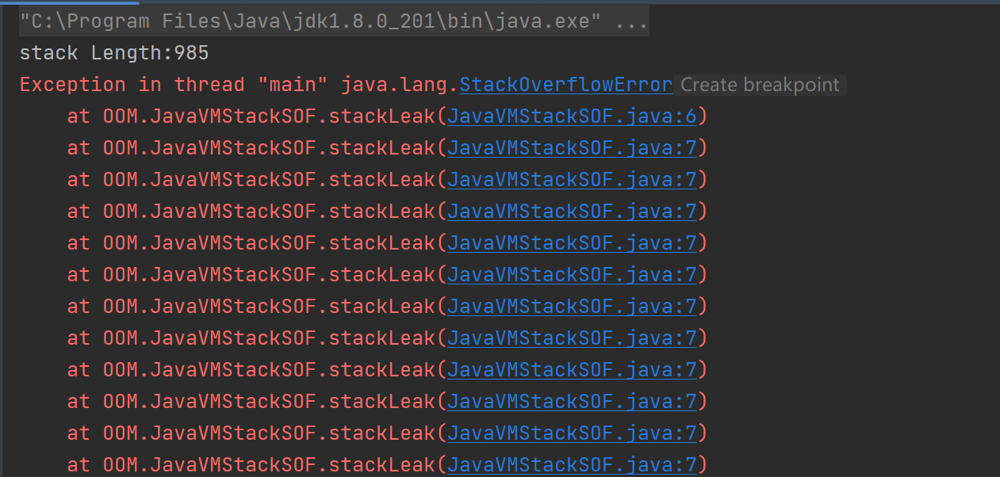
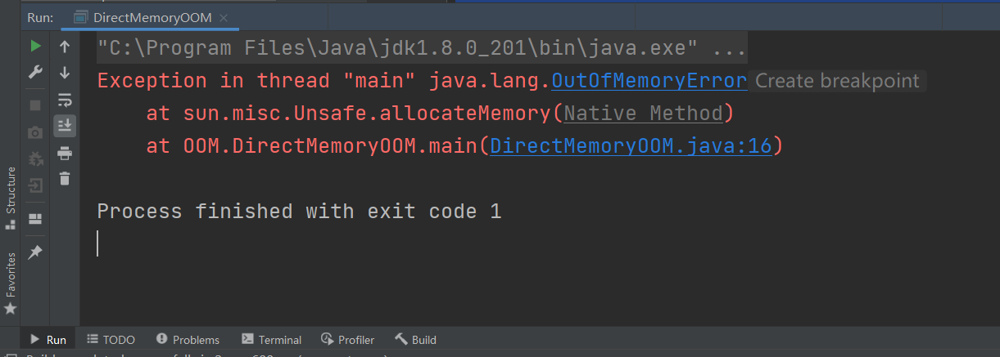
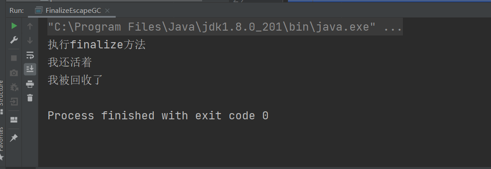

这篇是java虚拟机的学习笔记
学习资料
- 深入理解java虚拟机——JVM高级特性与最佳实践
虚拟机的内存区域划分

- 各个区域有各自用途，创建和销毁的时间
- 有些区域随虚拟机进程的启动而一直存在
- 有些区域依赖用户线程和启动和结束而创建和销毁
程序计数器
程序计数器（Program Counter Register）
- 较小内存空间
- 当前线程所执行的字节码指示器
- 是程序控制流的指示器
- 分支、循环、跳转、异常处理、线程恢复等基础功能依赖于程序计数器
- 线程私有内存
字节码解释器工作：
- 通过改变程序计数器的数值，来选取下一条需要执行的字节码指令
计数器的值记录的是正在执行虚拟机执行的指令的地址。如果执行的是本地（Native）方法，则计数器的值为空（Undefined）
此内存区域是《Java虚拟机规范》中唯一一个没有规定任何OutOfMemoryError情况的区域
Java虚拟机栈
Java虚拟机栈（Java Virtual Machine Stack）
- 线程私有内存
- 与线程的生命周期相同（随着线程启动而创建，结束而销毁）
- 虚拟机栈描述的是Java方法执行的线程内存模型
- Java虚拟机栈存放的是Java方法调用的产生的栈帧（Stack Frame）
- 栈帧存放的是：局部变量表、操作数栈、动态连接、方法出口等信息
- Java虚拟机栈存放的是Java方法调用的产生的栈帧（Stack Frame）
局部变量表
- 储存
- java虚拟机的基本类型（boolean, byte, char, short, int, long, float, double）
- 对象引用（指向对象起始地址的引用指针，一个代表对象的句柄）
returnAddress类型（指向一条字节码指令的地址）
- 变量槽（slot）
- long和double类型占2个变量槽，其他类型占1个变量槽
局部变量表的大小（所需的内存空间）在编译时期就确定分配了。
每个方法在栈帧中所需要的大小（局部变量的间）也完全确定，在运行时期不会改变局部变量表的大小
这里的大小指的是变量槽的数量，而一个变量槽所占有多大的内存空间，由虚拟机决定
在虚拟机栈中，《Java虚拟机规范》规定两种内存区域异常状况
- 线程请求的栈的深度大于虚拟机所允许的深度：StackOverflowError
- 如果虚拟机是可动态扩展的（Hotspot是不可动态扩展的），无法申请到足够的内存时候：OutOfMemoryError
本地方法栈
本地方法栈（Native method stacks）
- 本地方法栈是为虚拟机所调用到的本地（native）方法服务的
虚拟机栈是为虚拟机执行java方法（字节码）服务的
栈深度溢出：StackOverflowError
栈扩展失败：OutOfMemoryError
Java堆
- 是所有线程共享的内存区域
- 存放的是Java对象实例
- 是垃圾收集器管理的区域
- 内存空间：物理上可以是不连续的，但是逻辑上要是连续的
没有内存完成对象实例的分配，并且堆无法再扩展时：OutOfMemoryError
方法区
- 线程共享的区域
- 储存已被虚拟机加载的类型信息、常量、静态变量、即时编译器编译的代码缓存
- 又称为”非堆“（non-heap）
- 内存空间：物理上可以不是连续的，但是逻辑上要求连续
- 可以选择是否进行垃圾回收，这块区域的垃圾回收的目标是常量池的回收和类型的卸载
无法满足新的内存分配需求时，抛出OutOfMemoryError异常
运行时常量池
运行时常量池（Runtime Constant Pool）是方法区的一部分
常量池表（存放字面量和符号引用）的内容在类加载后存放在方法区的运行时常量池中
直接内存
- 直接内存（Direct Memory）不是虚拟机运行时的数据区域，也不是《Java虚拟机规范》中定义的内存区域
Java中的NIO(New Input/Output)类：通过Native函数库直接分配堆外内存，通过java堆中的DirectByteBuffer对象作为这块内存的引用进行操作，避免了在Java堆和native堆中来回复制数据
- 直接内存的大小不受java堆的限制，但是会受到本机总内存和处理器寻址空间的限制
对象
对象创建
这里讨论的是通过new关键字（不包括通过复制、反序列方式）创建的Java普通对象（不包括数组、Class对象）
Java编译器会在Java代码中的new关键字地方，对应的字节码生成两条指令
- new指令
- invokespecial指令
Java虚拟机遇到字节码的new指令，会根据指令的参数，检查是否能在常量池中定位到一个类的符号引用，并检查符号引用代表的类是否能已经加载、解析和初始化。没有执行类加载过程。
类加载检查通过后，Java虚拟机为这个新生对象分配内存。内存的大小在类加载完成后可完全确定
分配方式
分配内存的方式有两种
- 指针碰撞（Bump the pointer）
- 空闲列表（free list）
选择的分配方式根据的是Java堆中的内存是否规整而决定的
Java堆的内存是否规整是根据所采用的垃圾收集器是否带有空间压缩整理（Compact）能力决定的
指针碰撞
如果Java堆中的内存是绝对规整的，使用Serial,ParNew等带有压缩整理过程的收集器
指针：已使用的内存和未使用的内存的分界点指示器
空闲列表
Java堆中已被使用和空闲的内存交错
虚拟机维护一个记录哪些内存块是可用的列表
使用CMS这种基于清除（Sweep）算法的收集器时
并发安全问题
两种可选方案
- 分配内存空间上采用同步处理
- 采用CAS配上失败重试的方式保证更新操作的原子性
- 本地线程分配缓冲（Thread Local Allocation Buffer, TLAB）
- 哪个线程分配内存就在哪个线程的缓冲区分配，当本地缓冲区用完了而需要分配新的缓冲区时，采用同步锁定
-XX:+/-UseTLAB
初始化
内存分配完成后，在分配到的内存空间（不包括对象头）进行初始化为零值。
如果使用了TLAB，则初始化可提前到TLAB分配时进行
保证java代码中的对象实例字段不赋初始值就可以直接使用
对象头（Object Header）设置，例如对象是哪个类的实例，如何找到类的元数据信息，对象的哈希码（实际在使用hashcode时才计算），GC分代年龄
执行构造函数
执行Class文件中的<init>()方法使得对象的其他资源和状态信息按照预定的意图构造好
对象内存布局
对象在堆内存的储存布局分为三部分
- 对象头（Header）
- 实例数据（Instance Data）
- 对齐填充（Padding）
对象头
对象头分成两类信息
- 储存对象自身运行时的数据（Mark Word）
- 对象的类型指针
对于对象自身运行时的数据包括哈希码、GC分代年龄、锁状态标志、线程持有的锁、偏向线程ID、偏向时间戳。这部分数据的长度在32位和64位的虚拟机中分别位32比特和64比特（8字节的1倍或2倍）
Mark Word为动态定义的数据结构：根据对象的状态复用自己的储存空间
类型指针即对象指向它的元数据类型的指针：通过该指针来确定该对象是哪个类的实例
实例数据
实例数据部分是对象真正存储的有效信息
包括父类继承和子类定义的字段
储存顺序：受虚拟机分配策略参数和字段在java源码中定义顺序影响
- 相同宽度的字段总是被分配在存放
- 分配顺序为：longs/doubles, ints, shorts/chars, bytes/booleans, oops(Ordinary Object Pointers)
- 父类定义变量出现在子类之前
对齐填充
占位符的作用，使对象在堆中的内存满足8字节的整数倍
HotSpot虚拟机的自动内存管理系统要求对象起始地址必须是8字节的整数倍
对象访问定位
Java栈上的reference数据来操作栈上的具体对象
主流的访问方式有两种
- 使用句柄
- 直接访问
使用句柄
java堆上开辟一块内存作为句柄池。reference中储存对象的句柄地址。句柄中对象实例数据（Java堆中）和对象类型数据（方法区中）
优点：reference中储存的是稳定的句柄地址，在对象移动时，只需要修改句柄中的对象示例数据指针，不需要修改reference
缺点:间接访问的开销
直接访问
reference储存的时对象地址
优点：速度快，不需要多一次间接访问的开销
OOM实战
Idea版本2020.3.2




Java堆溢出
-Xms20m -Xmx20m -XX:+HeapDumpOnOutOfMemoryError
1 | package OOM; |

虚拟机栈和本地方法栈溢出
HotSpot不支持栈的动态扩展
使用-Xss参数减少栈内存容量
-Xss128k
1 | package OOM; |

方法区和运行时常量池溢出
在JDK8中完全使用元空间来代替永久代
String::intern作用时，如果字符串常量池中已经包含一个等于此字符串对象的字符串，则返回代表池中这个字符串的对象的引用，否则将此String对象包含的字符串添加到常量池中，并返回此String对象的引用
字符串常量池已经移到Java堆中，只需在常量池里记录首次出现的实例的引用
在Java8运行结果
1 | package OOM; |
元空间
-XX:MaxMetaspaceSize：元空间的最大值，默认-1不受限制-XX:MetaspaceSize指定元空间的初始空间大小，字节为单位，达到该值会触发垃圾收集进行类型卸载-XX:MinMetaspaceFreeRadio：在垃圾收集之后，控制最小的元空间剩余容量的百分比，可减少因为元空间不足导致的垃圾收集的频率-XX:MaxMetaspaceFreeRadio：用于控制最大的元空间剩余容量的百分比
本机直接内存溢出
直接内存（Direct Memory）的容量大小通过-XX:MaxDirectMemorySize来指定，默认与Java堆最大值（-Xmx）一致
-Xms20M -XX:MaxDirectMemorySize=10M
1 | package OOM; |

垃圾收集器与内存分配策略
- 程序计数器、虚拟机栈和本地方法栈三个区域随线程而生，随线程而灭。每个栈帧分配内存的大小在类结构确定时就已知。
- 对于这几个区域，在方法结束或线程结束时，内存自然就跟随着回收
Java堆和方法区具有不确定性：内存分配和回收是动态的
判断对象是否死亡
即是否不存在任何途径使用对象
- 引用计数算法：判断对象引用数量
- 可达性分析算法：判断对象是否引用链可达
java采用的是可达性分析算法
引用计数算法
引用计数器：有地方引用加一，引用失效减一。当引用计数器为零时，代表对象不可能再被使用
优点：虽然占用一些额外的内存空间，但原理简单，效率高
缺点：许多例外的情况要考虑：例如单纯的引用计数难以解决对象之间相互引用的问题
1 | package OOM; |
可达性分析算法
通过一系列称为”GC Roots”的根对象作为起始节点集，从”GC Roots“根据引用关系向下搜索。搜索过程的路径称为引用链。
如果某个对象到GC Roots间没有引用链，即不可达时，则该对象不可能再被使用
固定可作为GC Roots对象包括
- 在虚拟机栈（栈帧中的本地变量表）中引用的对象，譬如各个线程被调用的方法堆栈中使用到的参数，局部变量、临时变量等
- 在方法区中，类静态属性引用的对象，譬如Java类的引用类型静态变量
- 在方法区中，常量引用的对象，譬如字符串常量池里的引用
- 在本地方法栈中JNI（native方法）引用的对象
- Java虚拟机内部的引用，如基本数据类型对应的Class对象，一些常驻的异常对象（
NullPointException，OutOfMemoryError）等，还有系统类加载器 - 所有被同步锁（
synchronized关键字）持有的对象 - 反应Java虚拟机内部情况的JMXBean，JVMTI中注册的回调、本地代码缓存等
除固定的GC Roots集合外，还有其他对象临时性加入
- 譬如分代收集和局部回收
引用概念
- 强引用（Strongly Reference）
- 引用赋值：
Object obj = new Object();的引用关系。只要强引用关系存在，垃圾收集器永远不会回收被引用的对象
- 引用赋值：
- 软引用（Soft Reference）
- 描述的是有用，但非必须的对象
- 只被软引用的对象，在系统将要发生内存溢出异常前，会将这些对象列入回收范围进行第二次回收。如果这次回收后仍然没有足够内存，才抛出内存异常
SoftReference类
- 弱引用（Weak Reference）
- 描述的是非必须的对象
- 被弱引用关联的对象只能生存到下一次垃圾收集发生为止
- 无论内存是否足够，都会回收掉只被弱引用关联的对象
WeakReference类
- 虚引用（Phantom Reference）,又叫幽灵引用，幻影引用
- 虚引用是否存在，对其生命周期完全没有影响
- 无法通过虚引用来取得对象实例
- 唯一目的：为了能在该对象被回收时，能受到系统的通知
PhantomReference类
对象死亡
一个对象真正的死亡至少要经过两次标记过程。
如果一个对象进行可达性分析后，发现没有GC Roots引用链可达，会进行第一次标记。随后判断该对象是否有必要执行finalize()方法。
没有必要执行finalize()方法情况：
- 没有覆盖finalize()方法
- finalize方法已经被虚拟机调用过
如果有必要调用finalize方法，那么该对象会放入F-Queue队列中，并且有虚拟机创建的Finalizer线程去执行队列中对象的finalize()方法。
finalize方法在Object类中，当一个对象没有任何引用与之相关联的时候，垃圾收集器在垃圾回收时会调用该方法。同时这个方法最多只会调用一次。
1 | protected void finalize() throws Throwable { } |
finalize方法是对象能够逃离被回收的最后一次机会，如果在该方法内，该对象与引用链上的任何一个对象建立关联（将this赋给某个类变量或成员变量）则将移除被回收的集合。如果该对象在finalize方法执行后仍然与GC Roots没有建立连接，或者已经执行过finalize放了后又进入即将被回收的状态，则就真的被回收
finalize可以用来做关闭外部资源的清理工作，但是不推荐这样做，也不建议使用这个方法，而是将清理工作交给try-finally语句
演示代码
1 | package FinalizeTest; |

回收方法区
垃圾回收器主要回收的对象是Java堆（尤其是Java堆中的新生代）
而《Java虚拟机规范》不要求虚拟机再方法区中实现垃圾收集。
在大量使用反射、动态代理、CGLib等字节码框架，动态生成JSP以及OSGi这类频繁自定义类加载器的场景中，通常需要Java虚拟机具有类型卸载的能力，确保不会对方法区造成过大的内存压力
方法区中回收两部分内容
- 废弃的常量
- 不再使用的类型
废弃的常量：没有任何地方引用到该常量池中的字面量
- 例如”java”字符串常量，其他类（接口）方法、字段的符号引用
不再使用的类型：应该满足下面三个条件，但是满足后也不一定会被回收
- 该类的所有实例都被回收：Java堆中不存在该类及其任何派生子类的实例
- 加载该类的类加载器已经被回收
- 该类对应的
java.lang.Class对象没有在任何地方被引用：即无法在任何地方通过反射访问该类的方法
-Xnoclassgc参数进行控制
垃圾收集算法
垃圾收集算法划分为：
- 引用计数式垃圾收集（reference counting gc）（直接垃圾收集）
- 追踪式垃圾收集（tracing gc）（间接垃圾收集）
java虚拟机采用追踪式垃圾收集
分代收集理论
- 强分代假说（strong generational hypothesis）：经历越多次垃圾收集过程的对象越难以消灭
- 弱分代假说（weak generational hypothesis）：绝大多数的对象都是朝生夕灭的
- 跨代引用假说（intergenerational reference hypothesis）：跨代引用相对于同代引用仅占少数
根据分代收集理论，将java堆依据对象的年龄划分成不同的区域
一般至少把java堆分为
- 新生代（young generation）
- 老年代（old generation）
记忆集（remembered set）：将老年代划分成若干小块，标识出老年代的哪一块内存会存在跨代引用，当发生Minor GC时，只有包含跨代引用的小块内存对象会被加入到GC Roots中进行扫描
- 部分收集（partial GC）
- 新生代收集（Minor GC/Young GC）：目标是新生代的垃圾收集
- 老年代收集（Major GC/ Old GC）：目标是老年代的垃圾收集
- 混合收集（Mixed GC）：目标是整个新生代以及部分老年代
- 整堆收集（full gc）：整个JAVA堆和方法区的垃圾收集
标记-清除算法
分为两阶段
- 标记
- 清除
两种方式：
- 标记需要回收的对象，同一回收所有被标记的对象
- 标记存活的对象，同一回收未被标记的对象
缺点：
- 两个过程的执行效率都随着对象的增加而降低
- 空间碎片化
标记-复制算法
半区复制：将内存分成大小相等的两部分，每次只使用其中一块。当需要进行垃圾回收时，将存活的对象复制到另一块空间，然后只进行一次清理。
缺点：
- 如果大量对象存活，则产生大量复制的开销
- 浪费太多的空间
优化标记复制算法
对于新生代的内存布局：
分成一块Eden空间和两块Survivor空间（Eden和Survivor占比8:1），每次使用Eden和一块Survivor。垃圾收集时，将存活对象复制到Survivor中，一并清除Eden和使用过的Survivor。
如果Survivor空间不够，则通过分配担保的方式进入老年代
标记-整理算法
主要针对老年代：
先对需要回收的对象进行标记，然后向内存空间一端移动，接着直接清理掉边界外的内存
标记-清除算法和标记-整理算法的差异在于前者是一种非移动式的回收算法，后者式移动式的。
缺点：移动存活对象必须更新引用这些对象的地方
移动内存则回收时复杂，不移动则分配时复杂